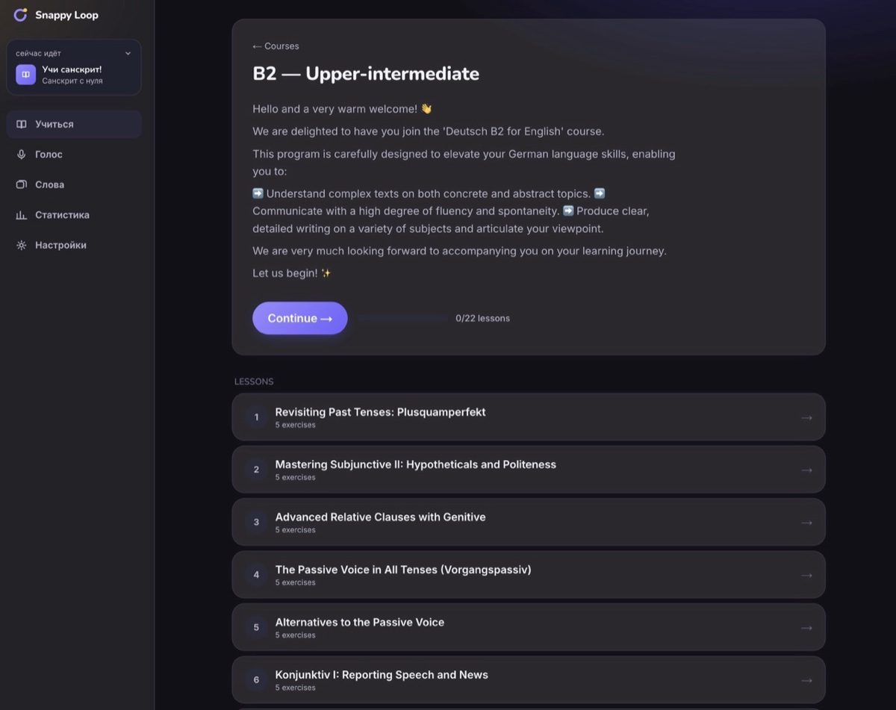
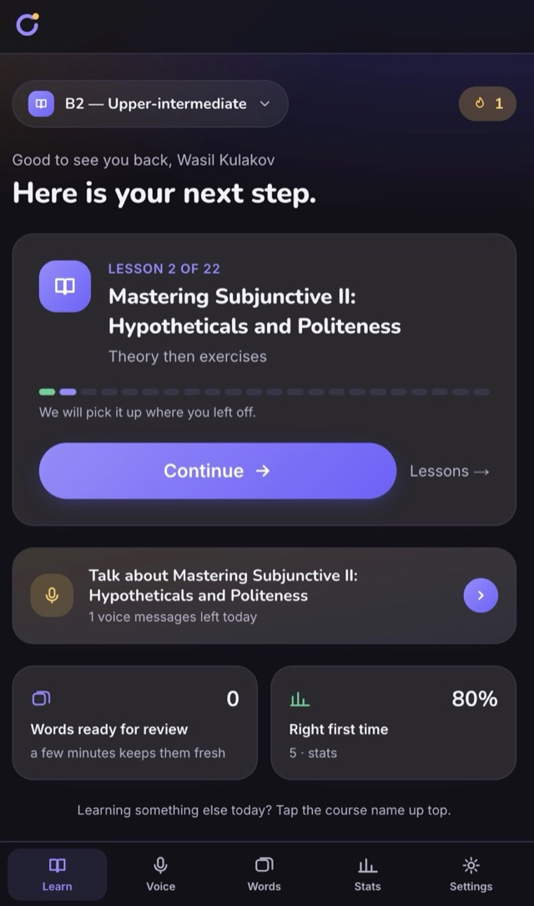
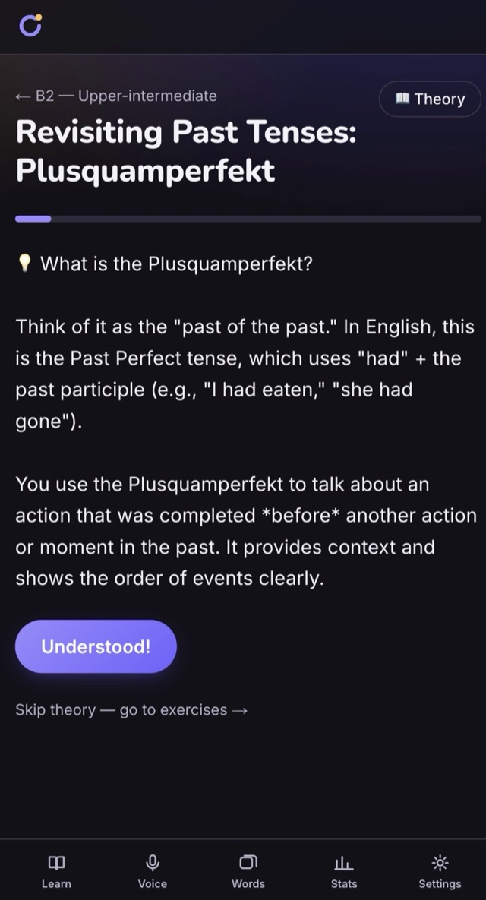
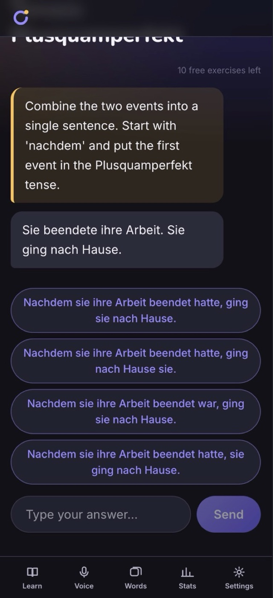

An AI-native delivery model, proven in production
snappyloop is an AI language-learning product — courses, live voice practice with a tutor, and spaced-repetition vocabulary, delivered through Telegram, its Mini App and the web. One engineer built and ran it on an AI-native delivery model.
In that model, specialized agents executed scoped work — a service change, a migration, a test suite — through GitHub Issues, which held each task, its context and the trail of decisions between sessions. Product decisions, architecture, priorities, risk, review and acceptance stayed human-owned: agents proposed and implemented, and nothing was accepted without review against the architecture.
The model carried more than a dozen services in Go and PHP — courses, voice practice, flashcards, payments, notifications — on PostgreSQL, Redis and Kubernetes. As the product grew from 200 to 5,000 users in three months, the architecture moved from a single long-polling worker to webhook-driven, horizontally scaled bot workers, with Redis for shared session state and global rate limits and one central ceiling for the AI vendors across every replica. The platform was load-tested at 20,000 requests per second.
Security was four layers deep on the webhook path — firewall, ingress, IP allowlist, and request-signature verification — with the internal API reachable only through an outbound-only Cloudflare Tunnel. SLO burn-rate alerts and multi-city Playwright probes watched it in production. The LLM proxy behind it grew into Keystone, an open-source gateway.



